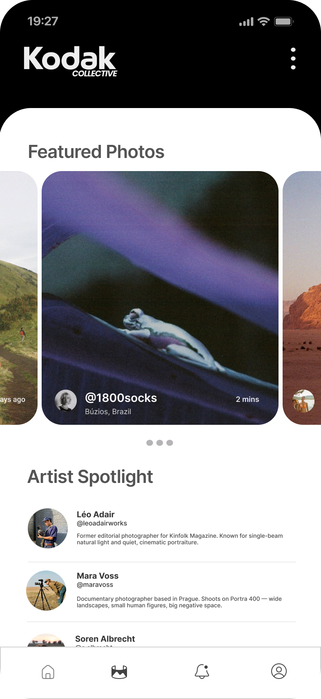
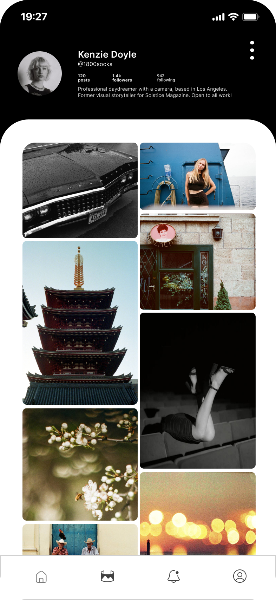
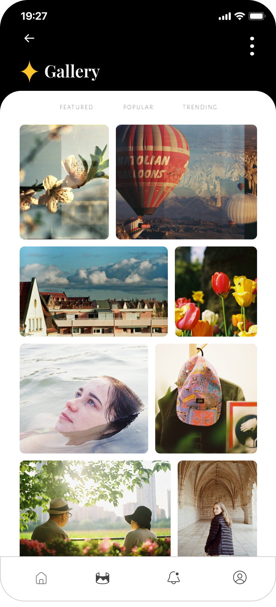
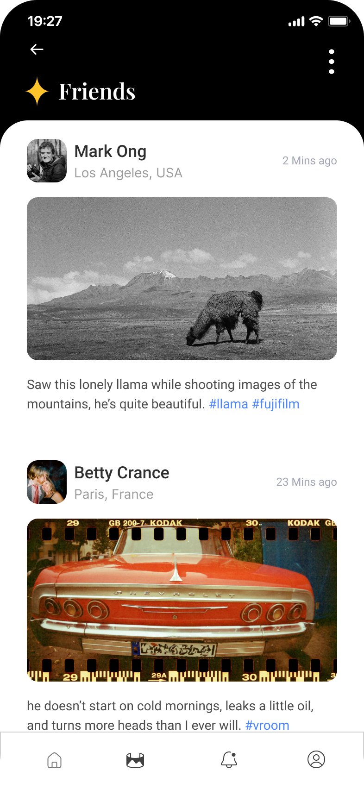
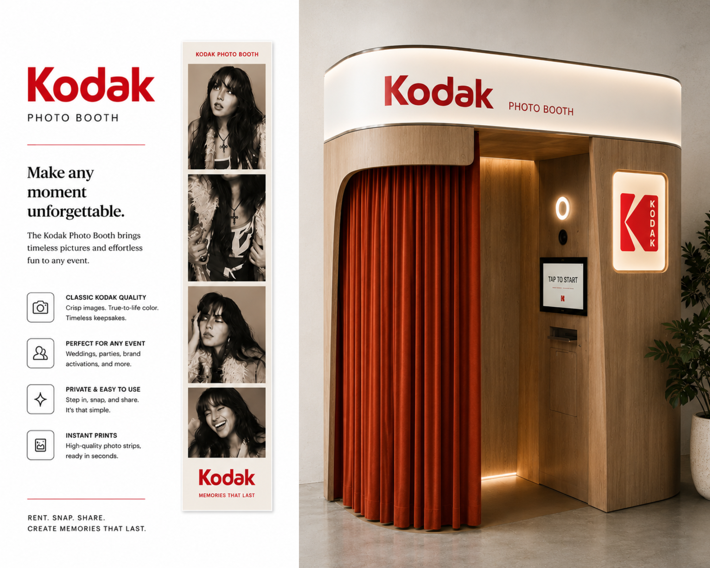
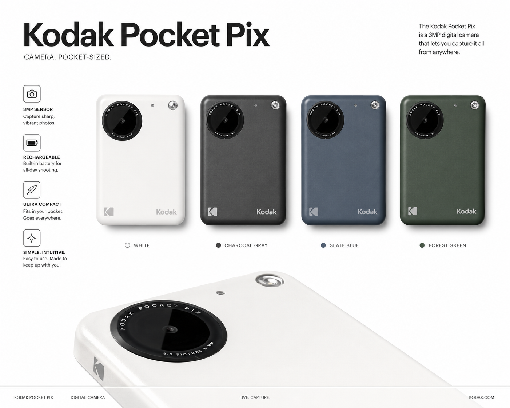

Campaign · App Design · Experiential
A conceptual integrated campaign for Kodak built around the idea that physical photos hold more meaning than digital ones. Expressed across four mediums — a mobile app, a traveling photo booth experience, a new product line, and a print ad — the campaign is anchored by the tagline: Memories You Can Feel.
Kodak Collective — App Design
A mobile platform where photographers share and showcase Kodak film and instant prints. Built around community, challenges, and a curated gallery — designed to bring film photography culture online without losing what makes it analog.
Homepage
The main feed — recent uploads from followed photographers, featured film rolls, and community challenges surfaced in a clean, scrollable layout.

Profile
A photographer's personal archive — organized by roll, format, and film stock. Followers, challenge history, and featured shots all in one place.

Gallery
A curated discovery space filtered by camera model, film stock, and shooting location — designed to surface the best analog work from the community.

Friends
A social layer built around shared rolls and collaborative shoots — see what your network is shooting, comment on frames, and plan shoots together.

A traveling pop-up experience that brings the nostalgia of instant photography to events, festivals, and city streets. Guests walk away with a branded film-style photo strip and a QR code linking to their digital copy.

A 3MP pocket-sized digital camera designed for everyday capture. Available in four colorways — White, Charcoal Gray, Slate Blue, and Forest Green — the Pocket Pix is rechargeable, ultra compact, and built to go everywhere you do.
